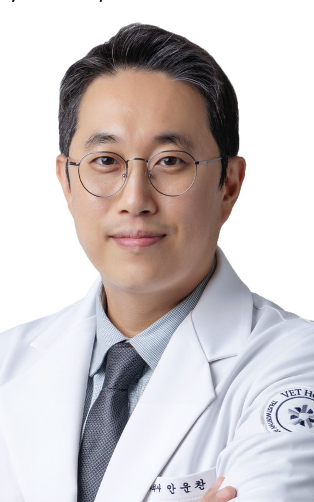

안운찬 수의사
시그니처동물의료센터 내과원장 | 혈액투석·신장비뇨기센터 및 응급중환자센터장
회복할 가능성이 남아 있다면, 그 시간을 버틸 수 있도록 돕겠습니다.
급성신손상, 중증 신부전과 중독으로 위중한 개와 고양이를 진료하며 혈액투석·혈액관류 등 신대체요법과 고유량산소요법, 기계환기로 질병으로 고통받는 중환자를 살리기 위해 노력하고 있습니다.
- 건국대학교 수의과대학 겸임교수
- 한국수의신장대체치료연구회 부회장
- 미국수의신장비뇨기학회 정회원
- IRIS Hemodialysis Academy 이수

누적 세션과 환자 수는 시그니처동물의료센터(구 스마트동물병원 신사본원) 혈액투석센터에서 안운찬 수의사가 직접 시행한 치료를 집계한 것으로, 2026년 9월 기준입니다.
혈액투석을 시작하게 된 이유
처음 혈액투석을 시작한 이유는 단순했습니다. 내과적 치료만으로는 위중한 상태를 견디기 어렵지만, 신장이 다시 기능할 가능성은 남아 있는 환자들이 있었기 때문입니다.
급성신손상은 원인을 해결하고 충분한 시간이 주어지면 신장 기능이 회복되는 경우가 있습니다. 그러나 회복을 기다리는 동안 심한 요독증, 고칼륨혈증, 산-염기 불균형과 수액 과부하로 환자를 잃기도 합니다. 혈액투석은 그 기간 동안 손상된 신장이 수행하지 못하는 기능의 일부를 대신합니다.
처음 시작하던 2016년 무렵에는 한국 수의계에서 혈액투석은 매우 생소한 치료였고, 참고할 수 있는 자료도, 직접 물어볼 수 있는 곳도 마땅치 않았습니다. 그럼에도 눈앞에서 꺼져가는 생명을 살리기 위해 가능한 모든 방법을 공부하고 시도해야 했습니다. 그 과정에서 수많은 시행착오와 고민이 있었지만, 결국 환자 한 마리 한 마리를 살리기 위해 누구보다 깊이 고민해 왔다고 생각합니다. 현재는 시그니처동물의료센터에서 혈액투석·신장비뇨기센터와 응급중환자센터를 맡고 있습니다.
투석이 필요한 환자는 대부분 매우 위중한 상태로 내원합니다. 투석을 시행할 것인지뿐 아니라 언제 시작하고, 어느 정도의 강도로 진행하며, 언제 중단할지를 판단하는 과정이 중요합니다. 같은 신장수치라도 원인과 소변량, 체액 상태, 동반 질환과 회복 가능성에 따라 치료 방향은 달라집니다.
이제는 그동안 축적해 온 경험과 데이터를 우리 환자들에만 머무르게 하지 않고, 더 많은 환자들이 도움을 받을 수 있도록 동료 수의사들과 공유하려고 노력하고 있습니다. 진료 현장에서 생긴 질문을 연구로 확인하고, 연구에서 얻은 답을 다시 환자 진료에 적용하는 것이 제가 지향하는 방향입니다.
2016년 무렵부터 이 분야에 집중해 오고 있으며, 다양한 논문과 연구, 수의사를 대상으로 한 강의를 통해 더 많은 환자를 살릴 수 있도록 지식을 나누고 있습니다.
현재 소속
시그니처동물의료센터 내과원장
혈액투석·신장비뇨기센터 및 응급중환자 센터장
- 진료과목 — 내과, 신장내과, 혈액투석, 중환자응급의학
- 구 스마트동물병원 신사본원 (2013년 개원, 서울 강남구)
- 혈액투석·신장비뇨기센터, 종양센터, 인터벤션센터, 영상센터 운영
- Baxter Prismax 등 투석 장비 3대 가동
- 소형견·고양이 전용 혈액관류 카트리지 도입
약력
학력
- 강원대학교 수의과대학 졸업
- 강원대학교 수의과대학 수의내과학 석사 졸업
- 강원대학교 수의과대학 수의내과학 박사 수료
이수 교육
- IRIS Hemodialysis Academy
현직
- 시그니처동물의료센터 내과원장
- 혈액투석·신장비뇨기센터 및 응급중환자 센터장
- 건국대학교 수의과대학 수의내과학 겸임교수
학회 활동
- 한국수의신장대체치료 연구회(KSVERRT) 부회장
- 한국수의응급중환자의학회(KVECCS) 위원
- 벳아너스(VETHONORS) 학술위원
- 미국수의신장비뇨기학회(ASVNU) 정회원
- 미국수의응급중환자의학회(VECCS) 정회원
- 대한신장학회 중환자신장학회 준회원
주요 진료 분야
개와 고양이의 신대체요법, 신장·비뇨기 질환, 그리고 응급·중환자 진료를 봅니다.
혈액투석 · 신대체요법 (RRT)
몸 밖으로 혈액을 돌려 노폐물과 수분, 전해질을 직접 걸러냅니다. 신장 기능이 돌아올 때까지 요독증과 전해질 이상을 붙잡아 둡니다.
- 간헐적 혈액투석(IHD)
- 지속적신대체요법(CRRT)
- Kt/V 기반 투석 처방 설계
- 투석 카테터 장착 및 관리
- 만성신장병에 겹친 급성신손상(ACKD) 관리
신장 · 비뇨기 진료
투석이 필요하지 않은 단계의 신장질환부터 폐색성 요로질환까지, 원인과 회복 가능성에 따라 치료 방향을 정합니다.
- 급성신장손상(급성신부전, AKI)과 만성신장질환(만성신부전, CKD)
- 고양이 요로폐색 — 요관폐색, SUB, 요관스텐트
- 재발성 비뇨기 질환
- 방광염, 방광결석, 요도폐색
- 산-염기 및 체액 불균형
혈액관류 · 중독 치료 (HP)
흡착 카트리지로 혈액 속 독성물질을 직접 빨아들입니다. 단백결합률이 높아 일반 투석으로는 걸러지지 않는 약물에 씁니다.
- NSAIDs(이부프로펜 등) 중독
- 암로디핀·사이클로스포린·페노바르비탈·와파린
- 패혈증·전신염증반응증후군의 사이토카인 제거
- 열사병, 고빌리루빈혈증
- 체외순환량 15~50mL 소형 환자 대응
응급 · 중환자 진료
투석이 필요한 환자는 대부분 응급으로 실려 옵니다. 도착 직후의 판단과 안정화, 투석 개시 시점을 같은 사람이 이어서 봅니다.
- 급성 호흡부전 및 저산소증 집중 치료 (폐수종, 폐렴 등)
- 고유량 비강 캐뉼라 산소요법 (HFNC)
- 기계환기 관리 (mechanical ventilation)
- 쇼크 및 다장기부전 환자 소생·안정화
- 패혈증 및 SIRS 집중 치료
- 심폐소생술 및 응급환자 관리
이럴 때 혈액투석을 고려합니다
아래에 해당한다면 주치의 선생님과 상의해 전원 여부를 검토해 보시기를 권합니다.
소변량이 급격히 줄었을 때수액 치료에도 반응하지 않는 핍뇨·무뇨는 시간을 다투는 상황입니다.
수액을 더 줄 수 없을 때이미 수액 과부하로 부종이나 호흡 곤란이 생겨 치료가 막힌 경우입니다.
약물·독성물질을 먹었을 때진통제, 항응고제, 심장약 등 해독제가 없거나 흡착이 늦은 중독입니다.
요독 증상이 조절되지 않을 때구토, 경련, 의식 저하 등 요독성 뇌증이 동반된 중증 신부전입니다.
고칼륨혈증이 반복될 때내과적 처치로 교정되지 않아 심정지 위험이 있는 전해질 이상입니다.
만성 신장병 환자가 갑자기 나빠졌을 때기존 CKD에 급성 악화가 겹친 ACKD 상황입니다.
혈액투석은 혼자서 할 수 있는 치료가 아닙니다
투석기를 돌리는 몇 시간 동안 카테터와 항응고, 활력징후를 한꺼번에 봐야 합니다. 한 사람의 의지만으로는 되지 않고, 사람과 장비가 함께 준비돼 있어야 시작할 수 있습니다.
투석을 운용할 수 있는 수의사가 상주합니다
시그니처동물의료센터 혈액투석센터에는 동물 혈액투석을 직접 진행할 수 있는 수의사가 항상 대기하고 있습니다. 특정 한 사람의 일정에 환자의 치료 시점이 묶이지 않습니다.
365일 주말·공휴일 없이 혈액투석이 가능합니다
급성신손상과 중독은 날짜를 가려서 오지 않습니다. 보통 당일 오후 5시까지 내원한 환자는 그날 안에 투석을 시작할 수 있고, 그보다 늦게 도착하면 먼저 응급 처치로 상태를 잡은 뒤 투석 일정을 잡습니다.
동시에 여러 환자를 치료할 수 있습니다
Baxter Prismax를 포함한 투석 장비 3대를 운용합니다. 소형견·고양이용 혈액관류 카트리지까지 갖춰 체외순환량 15~50mL의 초소형 환자도 받습니다.
응급중환자 진료와 같은 팀이 그대로 이어서 봅니다. 도착 직후의 안정화부터 투석 개시까지, 환자를 다른 곳으로 옮기지 않고 한자리에서 진행합니다.
연구와 학술 활동
진료에서 생긴 질문을 데이터로 확인합니다
임상에서 경험한 결과를 개인적인 경험에 머무르게 하지 않으려 합니다.
어떤 환자가 치료로 도움을 받을 수 있는지, 언제 투석을 시작해야 하는지, 치료 강도와 합병증은 어떻게 관리해야 하는지를 데이터를 통해 확인하고 동료 수의사들과 공유하고 있습니다.
치료가 잘된 증례뿐 아니라 예상과 다른 결과, 치료의 한계와 시행착오도 함께 살펴보는 것이 수의 혈액투석의 발전에 필요하다고 생각합니다.
정해진 답이 없습니다
같은 신장수치라도 원인과 소변량, 체액 상태에 따라 시작 시점과 강도가 달라집니다. 표준 처방을 그대로 적용할 수 없기에, 판단의 근거를 스스로 만들어야 합니다.
데이터로 확인해야 합니다
인상과 기억은 틀립니다. 8년간 투석한 136마리를 후향적으로 분석해 급성신손상(퇴원 70%)과 만성신장병 급성 악화(퇴원 53%) 환자의 결과 차이를 확인하고 국제 학술지에 제1저자로 게재했습니다.
가르치면 검증받습니다
4개 수의과대학과 8개 병원에서 투석 아카데미를 진행하고 학회에서 발표해 왔습니다. 동료들의 질문과 반박을 통과한 판단만 환자에게 적용합니다.
수의 신대체요법 집중 논의의 장 개설
2025년 제1회 VHR(Veterinary Hemodialysis Rounds)을 열고 대표 연자로 발표했습니다. 12개 동물병원과 7개 수의과대학에서 52명이 참석해 생존율과 예후, 실패 사례까지 공유했습니다.
ACKD 환자의 투석 치료 성적, 제1저자 논문
혈액투석이 필요했던 개·고양이에서 만성신장병 급성 악화(ACKD)와 급성신손상(AKI)의 결과를 비교한 첫 후향 연구로, 2026년 7월 Frontiers in Veterinary Science(영향력지수 3.1)에 제1저자로 게재했습니다. 2017~2024년 136마리(개 67·고양이 69)를 분석했고 퇴원 생존율은 AKI 70%, ACKD 53%였습니다. 국내 동물병원 최초의 신대체요법 코호트 논문입니다(PubMed 기준). 저자 6명 중 4명이 시그니처 의료진이며 노스캐롤라이나주립대 허지웅 교수팀과의 공동 연구입니다. 논문 원문 ↗ · 데일리벳 보도 ↗
4개 수의과대학 · 8개 병원 투석 아카데미
2022년부터 건국대·경북대 등 수의과대학과 일산동물의료원 등 동물병원을 대상으로 1박 2일 과정의 혈액투석 아카데미를 운영해 왔습니다.
학술활동 — 논문 발표6
- 최신 · 제1저자 Dogs and cats with acute-on-chronic kidney disease have worse outcomes than those with acute kidney injury following renal replacement therapy Ahn W, Kim K, Kim J, Lee Y, Lee T, Her J. Frontiers in Veterinary Science 2026;13:1857111 · doi:10.3389/fvets.2026.1857111 ↗
- Successful treatment of ibuprofen intoxication using hemoperfusion with porous polymeric adsorbents in a toy poodle Ahn W. et al. JVMS 2026;88(3):505–508
- Successful hemodialysis treatment of suspected acorn toxicosis in a Bedlington terrier Jung S. et al. CVJ 2026;67
- A Case Report of Successful Treatment of Minoxidil Toxicosis Using Hemodialysis in a Cat Ahn W. et al. Vet Sci 2024;11:487
- Alteration of serum cystatin-C levels after hemodialysis in dogs with kidney disease Ahn W. et al. Pak Vet J 2021
- Tracheal hypoplasia in 6 English bulldogs Yoon W.-K. et al. J Vet Clin 2013
학술활동 — 학회 발표5
- Retrospective evaluation of outcomes in dogs and cats with acute-on-chronic kidney disease treated with renal replacement therapy 2025 IRIS-ACVNU Renal Week · 노스캐롤라이나주립대 공동 · ACKD 투석 성적 최초 보고 → 2026 Front Vet Sci 게재
- Renal Pelvic versus Bladder Urine Cystatin B Concentrations in five Cats with Ureteral Obstruction Undergoing Subcutaneous Ureteral Bypass: A Pilot Study 2025 아시아태평양 소동물수의사대회 (FASAVA)
- Juvenile diabetes mellitus concomitant with congenital anomalies of renal parenchyma in a Samoyed dog 2025 아시아태평양 소동물수의사대회 (FASAVA)
- Successful treatment of ibuprofen intoxication using hemoperfusion with porous polymeric adsorbents in a miniature poodle 2024 아시아태평양 수의사대회 (FAVA)
- Serum cystatin-C levels in dogs with kidney disease managed by hemodialysis 2019 아시아 수의전문의대회 (AMAMS)
강의 및 교육 활동21
- 2026 제1회 수의첨단재생의료포럼 — 문헌을 넘어선 AKI, 혈액투석과 줄기세포: 실제 임상현장의 고민들과 접근전략
- 2026 제주대학교 수의과대학 수의내과학 교실 — 해답없는 고민, 혈액투석: 물을 얼마나 빼야 할까? Volume-targeted ERRT
- 2026 경기도수의사회 연수교육 — 고양이 신장수치 상승, 수액만이 정답일까? 내일부터 바꾸는 고양이 맞춤형 치료전략
- 2025 IDEXX 웨비나 — 급성신장손상, 진단과 치료의 지형변화: Urine Cystatin B의 소개와 활용
- 2025 한국수의응급중환자의학회(KVECCS) 학술세미나 — 패널 디스커션: 증례로 보는 혈액투석의 임상적 활용
- 2025 충북대학교 수의과대학 성봉학술제 — Renal Replacement Therapy: Life and Identity as a Vet Clinician
- 2025 VCRS 동물 심장신장의학 최신치료기술 세미나 — Volume-targeted Extracorporeal Therapies in Veterinary Cardio-renal Syndrome
- 2025 제9회 청수콘서트 — 사공 없는 나룻배가 닿는 곳: 덕질이 특화분야가 된 성덕 스토리
- 2025 VHR (Veterinary Hemodialysis Round) — New Trend of Veterinary Renal Replacement Therapies
- 2025 한국고양이수의사회(KSFM) 컨퍼런스 — 강아지와 같은듯 다른 고양이 급성신손상: 진단과 치료에서 혈액투석까지
- 2024 서울시 × 동그람이 멍냥연수원 — 신장질환 우리아이에게도? 우리 아이 콩팥 건강하게 지키기
- 2024 추계 서울수의컨퍼런스 — 신부전, 과연 투석하면 좋아질까?
- 2024 벳스템솔루션 반려동물 줄기세포 심포지엄 — 반려동물 줄기세포 치료의 정립: 패널 디스커션
- 2024 CES (Case Exchange Symposium) — 신우확장을 보이는 급성신손상, 개통성이 먼저일까 투석이 먼저일까?
- 2024 인벳츠 × 벳아너스 임상특강 — Creatinine 8! 투석 해야할까? 증례중심으로 알아보는 혈액투석의 적용과 투석 타이밍
- 2024 인벳츠 × 벳아너스 임상특강 — 급성신손상 진단과 관리의 최신 가이드라인: IRIS consensus AKI Guideline
- 2024 강원대학교 임상수의사회(KUVMA) 특강 — 요즘 핫한 신장질환의 진단 및 치료방법
- 2024 강원대학교 임상수의사회(KUVMA) 특강 — IRIS 가이드라인으로 알아보는 신장질환의 진단과 치료
- 2023 수의학 전문 유튜브 채널 「베테랑」 — 급성 신손상과 혈액투석: 급성 신부전, 중요한 것은 꺾이지 않는 마음
- 2022~2025 스마트(시그니처) 혈액투석 아카데미 — 건국대·경북대 등 4개 수의과대학, 일산동물의료원 등 8개 병원 대상 1박 2일 아카데미
- 2022 수의사 교육 플랫폼 「V-Box」 — 급성 신손상과 혈액투석: 급성 신손상, 끝날 때까지 끝난 게 아니다
교육 및 저술 활동9
- 2026 서울시수의사회 진료 가이드북 — 신장비뇨기 파트 9개 chapter 저술
- 2025 수의학술정보지 BIBLE 16호 — 고양이 CKD에서 단백뇨, Telmisartan 적용 증례
2023.05 ~ 2023.11 대한수의사회지 「동물의료」 혈액투석 6개월 연재
- 어서와(요) 혈액투석은 처음이지(요)? — 혈액투석의 원리와 목표, 진행 절차, 흔한 궁금증
- 혈액투석, 어차피 죽는 거 아니야? — 급성신장손상과 혈액투석 시의 사망률, 실제 임상에서의 신장 회복률
- 혈액투석, 중요한 건 꺾이지 않는 마음 — 신장의 병태생리에 따른 급성신손상의 치료 기간
- 세상에서 제일 비싼 과일, 포도! — 일반 급성신장손상 외 중독 상황에서의 혈액투석
- 책에서만 봤지, Leptospira — 간과하기 쉬운 급성신장손상의 원인, 렙토스피라증의 재조명
- 혈액투석, 너 아니면 어쩔 뻔 했어? — 원인을 알 수 없는 무뇨기 환자의 치료 및 회복기
방송 출연2
- 2025 「최고의 수의사들」 8화 — 혈액투석, 생과 사의 경계에서 ↗
- 유튜브 채널 「똑똑하개 키우자옹」 ↗ — 「똑키 스터디」 신장질환·혈액투석 4개 회차 출연
신문 기사12
- [연자 인터뷰] 안운찬 내과원장 ↗ 데일리개원
- 게보린릴렉스 치사량 먹은 국내 반려견, 혈액관류로 살렸다 ↗ 데일리벳
- “CREA 정상인 무증상 AKI, Cystatin B로 조기 진단 가능” ↗ 데일리벳
- 한국수의체외신장대체치료연구회 KSVERRT 창립 ↗ 데일리벳
- ‘VHR’ 수의 혈액투석·신대체치료를 고민하는 수의사들이 전국에서 모였다 ↗ 데일리벳
- IRIS 국제 학회서 혈액투석 연구 발표 ↗ 데일리벳
- IRIS-ACVNU 2025 Renal Week서 ACKD 환자 치료결과 최초 보고 ↗ 데일리개원
- 인수공통감염병 렙토스피라증, 국내 반려견에서 연속 보고 ↗ 데일리벳
- ‘아차’ 미녹시딜 핥아 먹은 고양이에 치명적 중독증 ↗ 데일리벳
- 투석센터, 최신 장비 도입으로 CRRT 인프라 확충 ↗ 데일리벳
- 소형견·고양이도 급성 중독 시 혈액관류 치료 가능해진다 ↗ 데일리벳
- [참관기] Of the kidney, by the kidney, for the kidney ↗ 데일리벳
혈액투석 처방 계산기 — 시간대별 처방 입력, Kt/V·Qeff·청소율·여과분율 산출, IRIS 권장치 대조
진료실 밖의 공부와 기록
배우고 고민한 것을 조금 더 편안한 언어로 나눕니다
오랫동안 신장질환과 혈액투석을 진료하면서 가장 자주 들었던 질문은 “투석을 하면 좋아질까요?”와 “투석을 해도 결국 살기 어려운 것 아닌가요?”였습니다.
이 질문에는 간단한 하나의 답이 없습니다.
환자마다 원인 질환과 손상 정도, 회복 가능성과 치료 목표가 다르기 때문입니다. 정확한 정보를 충분히 알지 못해 치료 가능성이 남은 환자의 치료가 너무 일찍 중단되는 경우도 있었고, 반대로 치료의 한계가 충분히 설명되지 않은 채 과도한 기대를 갖게 되는 경우도 있었습니다.
강의와 논문, 학술 기고를 통해 이러한 인식을 바꾸려고 노력해 왔지만, 전문적인 글만으로는 미처 전하지 못하는 이야기가 많았습니다.
블로그에는 신장질환과 투석을 공부하며 배운 내용, 새로 읽은 논문, 혈액투석 아카데미 학습 기록, 환자를 진료하며 했던 고민과 수의사로 살아가며 갖게 된 생각을 조금 더 편안하게 기록하려 합니다.
정답을 말하기보다, 한 환자에게 더 나은 선택을 하기 위해 무엇을 고민했는지 나누겠습니다.
안운찬 수의사의 진료 노트 읽기 ↗무엇을 기록하나요
- 신장질환과 투석을 공부하며 배운 내용
- 새로 읽은 논문 정리
- 혈액투석 아카데미 학습 기록
- 환자를 진료하며 했던 고민
- 수의사로 살아가며 갖게 된 생각
진료 및 전원 문의
보호자님께
예정된 혈액투석 상담은 예약제로 운영합니다. 환자가 소변을 보지 못하거나 호흡곤란, 의식 저하, 경련, 심한 구토 또는 중독이 의심되는 응급 상황이라면 출발 전에 먼저 전화해 주세요.
내원 시 아래 정보를 준비하면 보다 빠른 판단에 도움이 됩니다.
- 증상이 시작된 시각
- 마지막으로 소변을 본 시각과 대략적인 소변량
- 섭취가 의심되는 약물이나 물질의 이름, 양과 시각
- 현재 체중, 기존 진단명과 복용 약물
- 최근 혈액검사, 요검사와 영상검사 결과
- 다른 병원에서 받은 치료 내용과 수액 투여량
- 병원시그니처동물의료센터
구 스마트동물병원 신사본원 - 진료과내과 · 혈액투석 / 신장비뇨기센터 및 응급중환자센터
- 주소서울특별시 강남구 도산대로 213 신동화빌딩
지도에서 보기 → - 대표전화02-549-0275
- 진료시간365일 24시간 응급진료
일반진료 10:00–21:00 · 심야진료 21:00–10:00 - 병원 채널 병원 홈페이지 ↗ 병원 블로그 ↗